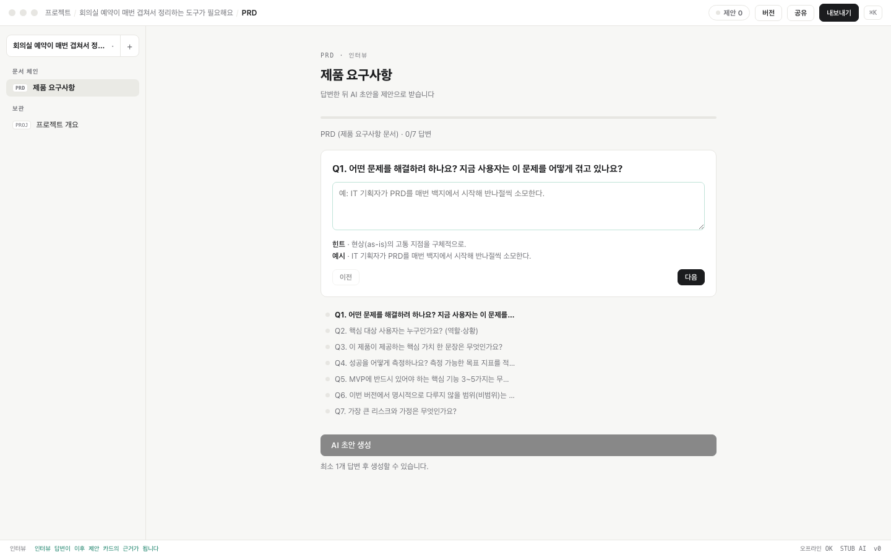
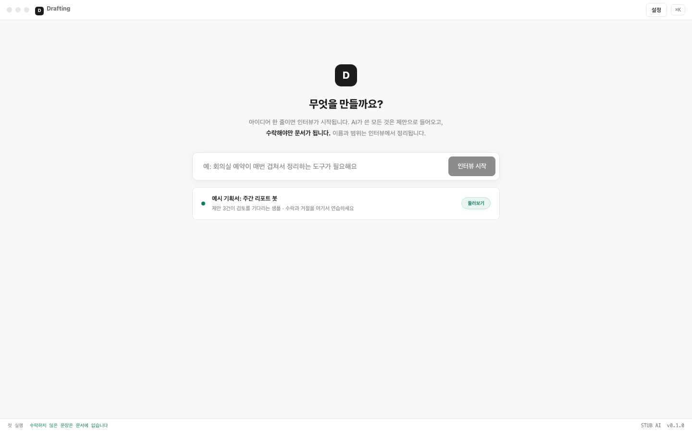

AI writes proposals.
You write the document.
A self-hosted planning workspace. One idea line starts an interview; PRD, feature spec and IA follow — but nothing AI writes becomes the document until you accept it.
MIT · runs on your Claude Code login, no API key (BYOK fallback) · your machine, your documents
Scope
The first release ships one Slack digest bot, reading a single spreadsheet. It does not ship a dashboard UI.
Suggestion mode
One grammar, learned in ten seconds.
If you have ever reviewed suggestions in a shared doc, you already know how to use Drafting. Green means "for your review" — everywhere, and nothing else.
01Everything AI writes is a proposal
Sections stream in as suggestions, highlighted green. There is no AI text that silently becomes your document.
02Only what you accept is the document
Exports and share links contain accepted sentences only. Pending suggestions never leak.
03Every proposal carries its source
Interview answer Q3, PRD §2, or your own rewrite instruction — you always see why the AI is proposing.
04Accept · reject · rewrite
Three ways to handle a card. A rewrite instruction returns as a fresh proposal, never as an edit behind your back.

Document chain
One idea line in. A document chain out.
Drafting opens with a single question — "What are we building?" A short interview follows, and your answers become the evidence behind every PRD, feature-spec and IA proposal downstream.
INTThe interview is a document
Your answers are saved as document zero — re-readable, and cited as the source of later proposals.
PRDContext flows down the chain
Feature specs inherit the PRD; IA inherits both. Each document knows which version of its parent it was written against.
STALEUpstream changes re-propose, never overwrite
Change the PRD and affected downstream items return to proposal state. Nothing is silently rewritten.
BYOKYour login, your machine
The desktop app drives your local Claude Code login — no API key. Docker self-host falls back to BYOK keys (AES-256-GCM, plaintext never stored).


Quickstart
Self-hosted in a minute.
Requirements: Docker (or Node 22+). Your documents live in a local SQLite file — no accounts, no cloud.
# run $ git clone https://github.com/hanmariyang/drafting && cd drafting $ docker compose up -d # open http://localhost:8477 — docker uses BYOK keys; the desktop app needs none
Download
Desktop app.
The document workspace as a native window — same self-hosted core inside.
Downloads land on the latest GitHub Release. Prefer a server? docker compose up and open it in any browser.